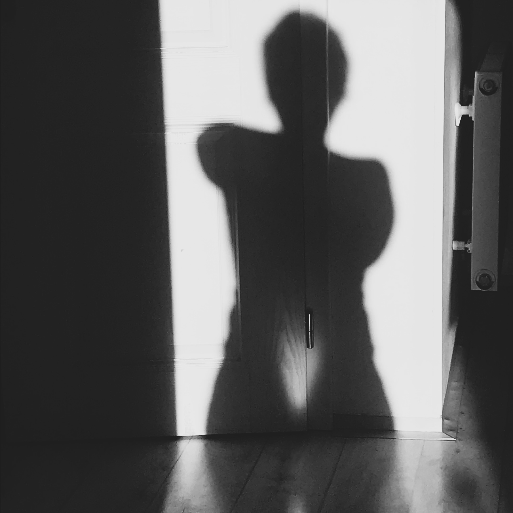

Pokud se cítíš prázdná, unavená a vyčerpaná, ve svém životě spíše přežíváš než tvoříš, otoč směr - obrať se DOVNITŘ . Není jiné cesty. Trpělivě, v tichosti, laskavosti i jemnosti naslouchej sobě i své duši. Tak naplníš zpět svůj pohár, posvátný grál.
S ženou je spojována péče. Péče o děti, muže, domácnost. Většina z nás byla učena plně ji poskytovat všem okolo, jen ne sobě. To by se přeci mohlo jevit jako sobecké. NENÍ. Aby ženská péče byla laskavá, milující a podporující je potřeba, aby žena byla sama naplněna. Když není, vede to k jejímu rozdání se, vyčerpání, vyhoření.
Ať už vyhoření nebo operace, těmito situacemi jsem byla učena k tomu, abych naslouchala svým potřebám a také si je uspokojovala. Pokud tomu tak nebylo, vždy mi tělo jasně dalo najevo svůj nesouhlas.
Díky tomu, že jsem si dala prostor a čas na péči o sebe a své tělo, naučila jsem se vnímat své potřeby, zastavovat se, naslouchat si, nastavovat hranice, být pravdivá, vnímat své emoce a nepotlačovat je i sebe.
Možná i ty jako já budeš v péči o sebe potřebovat variabilitu i pružnost, která je typická pro ženy, jako jejich cyklicita. Variabilitu mi poskytuje hudba, práce s hlínou, spontánní tanec, ochutnávky různých metod péče a práce s tělem, toulky přírodou. Variabilita mi pomáhá být plně tady a teď, neutíkat z těla a neustrnout v naučeném opakování, nebýt autopilotem.
Na druhou stranu je potřeba i pevnost a stálost, tu mne učí cchikung, který praktikuji u svých mistrů. Najdi si svůj pevný bod (meditace, jóga, dechová cvičení). Opakování je matkou moudrosti a bez pravidelnosti vám žádné umění nemůže vydat své ukryté poklady. Nejsou na povrchu.
A pokud Ti právě není hej...
Nalaď se na sebe, své lůno a naslouchej svým potřebám. Měj srdce otevřené, neztrácej víru a naději. Pevně se spoj se Zemí. Trpělivě a s pokorou naslouchej. Odpověď, jaké kroky právě TEĎ je třeba udělat, poznáš. Svůj život máš ve svých rukou.
Moje vyšlapaná cesta mne přivedla k poznání , že …
Ženská cesta není o drilu, hledání tam venku a následování, ale je o otočení se dovnitř a naslouchání nitru, propojení se s Bohem (zdrojem, univerzem) a svými kořeny a Zemí.
Ženská cesta vyžaduje odvahu. Odvahu přiznat si pravdivě co cítím, přijmout zranitelnost, kterou to přináší, vnímat a respektovat cykly a rytmy, přírodu samu, pustit kontrolu a otevřít se důvěře v život sám a s ním plynout. Krok za krokem otvírat své srdce a být. Být láskou a tvořit krásu světa.
Ženská cesta není venku a není univerzální, je uvnitř a je jedinečná.
Mohu tě inspirovat svoji cestou ale na Tobě je, kudy půjdeš a co vytvoříš.
Když se žena vydá na ženskou cestu, není to jednoduché a chce to odvahu. Začít se může v každém věku. Každá přinášíme a dotýkáme se nějakého kolektivního tématu zranění, které je třeba narovnat.
Viděla jsem mnoho žen, kterým cesta přinesla v osobním životě velké změny. Změnu práce, profese, někdy vedla k rozvodům a odloučením. Ženy to cítí, a proto vnímám u žen strach nořit se pravdivě do sebe. Často zůstanou na povrchu a nenaplní svůj potenciál, nerozzáří své světlo.
Sdílením svého příběhu chci ukázat, že cesta k sobě jako ženě neznamená vždy rozvod nebo opuštění. Ano, někdy to bolí a někdy budeš muset pustit na čem si lpíš, ale je to zákon přírody samé, že musí odejít to staré, nefunkční. Zůstává jen to, co je pro Život.
I já jsem stála několikrát v situaci, kdy můj muž nevěděl, zda půjde se mnou dál. V těch chvílích jsem se obracela do sebe, zkoumala, jaká zranění se ve mně aktivují. A ono napětí pak polevilo.
Náš vztah se proměnil, je založen na vzájemné lásce, úctě a respektu, vnímání odlišností našich životů a vzájemné podpoře v rozvoji toho, co nás naplňuje. Pečuji o sebe a pečuji i o náš vztah. Vytvářím teplo v krbu, přináším vize, přání a můj muž to pro mne s velkou láskou realizuje. Za to jsem neskutečně vděčná a vím, že bez té cesty by toho nebylo.
Žijeme v době, kdy staré zaniká a nové ještě není, tvoří se. O to více potřebujeme být v kontaktu sami se sebou, ve své plnosti. Vnímat se, cítit. Ze svých životů známe, co je mužská stránka. Tlak na výkon, soutěž, zacílení, směr ven. Ten ženský aspekt nám bývá mnohdy utajen a poznáváme ho přes zkušenosti z našich životů. Ale i on potřebuje být projeven a uznán, aby mohla nastat rovnováha. Tvoříme novou Zemi. Tvořme ji vědomě, s láskou, péčí a na pevných základech.
Být ženou je dar a v dnešní době i velká výzva. Otevřít se ženství, jeho aspektům, které byly mnohdy hluboko potlačeny není lehké, ale pro dnešní svět je to medicína.
Být ženou je dar a zároveň být ženou není ani víc, než být mužem. Umění je vnímat obě stránky v sobě, vnímat jejich kvality, jejich podstatu a vytvořit prostor pro jejich spolupráci. Uvnitř sebe i ve světě. Nerovnováha, neúcta, nenávist, nerespekt, a z toho plynoucí absence lásky, vede k destrukci našeho těla i světa samotného.
Jsme to všechny ženy, které rodíme Novou Zemi. A záleží na naší vědomosti či nevědomosti. Žena má neskutečný tvořivý potenciál, jako země sama, a všichni již vnímáme sílu myšlenky. Když se tyto věci spojí, a to v lůně ženy, tvorba započne.
A proto nalaď se na své lůno, co tvoříš a co bys chtěla tvořit? Jak bys chtěla, aby vypadal svět, ve kterém žiješ a budou žít tvé děti? Svoji představu prožij v těle, jako by už byla. I ty jsi žena Nové Země!!!
Kéž se ženy vrátí k sobě, opět oživí své ženství v plné síle i pokoře. S láskou k sobě i k mužům. Ty můžeš, jestli chceš. I na tobě záleží.
Příroda léčí, příroda uzdravuje, příroda učí i inspiruje. V přírodě odpočívám, v přírodě jsem sama sebou a se sebou. Je moudrá, je celistvá, nikoho nevyděluje, je cyklická. Je v ní všechen život.
Pokud se potřebuješ zastavit, utišit chaos v sobě, jdi ven. Vyndej sluchátka z uší, odlož mobil a pozoruj krajinu, vnímej zem pod nohama, svůj dech. Nasávej ranní slunce, kochej se západy a vnímej tu krásu. Boží tvorbu a její dokonalost.
Jak jsem již psala, před operací jsem si prošla šamanskou cestu. Podstatou byl návrat k základním principům života, k jeho přirozenosti, které se nám ve vnějším umělém a virtuálním světě moc nedostává.
Nemusíš absolvovat přímo šamanskou cestu. Stačí vyjít ven mezi stromy, pozorovat nebe a mraky, poslouchat ptáky, lehnout si do trávy, cítit podporu země. Vnímej všechny živly a uč se od nich, vše co je venku, je i uvnitř nás.
Pokud si úplně nevěříš, dopřej si průvodce. Díky vlastním zkušenostem a mnoholeté spolupráci Ti mohu vřele doporučit úžasnou bytost Alenku Naďovou (www.carokviti.cz), která ti svět přírody, bylinek laskavě přiblíží. Inspirovat se můžeš i její knihou Žena v proměnách roku.
Skvělým průvodcem ti může být i Monika Michael. Pobyt s ní v přírodě mi pomohl uvědomit si své destruktivní naučené vzorce chování, přiblížil mne k sobě a napojení na zdroj.
Prohloubení vnímaní přírody a jejich cyklů mi přinesl řád a klid do života, mnohem více chvilek pro zastavení a naslouchání.
Rozhodnutí jít na operaci a operace sama mne navrátila zpět k mé tvořivosti. Trvá to dodnes. Tvorba je to, co mě rozsvěcuje a naplňuje. Tento web je toho důkazem. Pokud mluvím o tvoření, nejedná se jen o tvořivost v uměleckém slova smyslu.
Tvoříš vše, co zhmotňuješ ve svém životě.
Měj čas, abys mohla naslouchat své duši. Otevírej se voláním, vizím, snům. Pak jednotlivé kroky čiň s láskou, bez tlaku na očekávání výsledku>, jaký si představuješ. Lpění na určité formě vytváří odpor.
Otevři se a tvoř, vnímej, jaká činnost tě naplňuje, dělá radost. Té se věnuj a rozvíjej ji. Důvěřuj Životu, že Ti přinese to nejlepší. Vlastní cesta ti ukáže, co je tvůj dar, co přinášíš a jaká je tvá esence.
Žijeme v době, kdy staré zaniká a nové ještě není, tvoří se. O to více potřebujeme být v kontaktu sami se sebou, ve své plnosti. Podstatou ženské tvorby je láska a krása. Tvoř z tohoto místa, ne ze strachu nebo touhy po uznání.
Tvoříme novou Zemi. Tvořme ji vědomě, s láskou, péčí a na pevných základech. S láskou k sobě, k našim mužům, dětem i přírodě.
A znovu tu připomínám:
Jsme to všechny ženy, které rodíme Novou Zemi. A záleží na naší vědomosti či nevědomosti. Žena má neskutečný tvořivý potenciál, jako země sama. Všichni již vnímáme sílu myšlenky. Když se tyto věci spojí, a to v lůně ženy, tvorba započne.
A proto nalaď se na své lůno, co tvoříš a co bys chtěla tvořit? Jak bys chtěla, aby vypadal svět, ve kterém žiješ a budou žít tvé děti? Svoji představu prožij v těle, jako by už byla. Děkuji Ti. I ty jsi žena Nové Země
Práce s hlínou mi velmi pomohla před operací. Jeden den se mi pod rukama vymodelovala sama děloha i s vaječníky. Pár dní jsem ji nechala na domácím oltáři a mnohem více vnímala celý proces loučení.
Pak, ještě před operací, jsem ji věnovala Zemi, na místo, kam jsem chodívala při procházkách, kde jsem rozjímala a hledala odpovědi na své otázky. Hlína se časem spojila se Zemí, Země ji pojala a za ta léta proměnila.
Jsem dodnes velmi ráda, že jsem se takto rozloučila a uctila dělohu.. Dělohu, která už neunesla tolik bolesti, ale dala život mým dětem.
Více o práci s hlínou, jako léčivým pomocníkem, najdeš v článku Objev krásu ženské tvorby.
Hlína je krásný terapeutický nástroj. Mě přinesla prožitek spontánní tvorby, umění nechat prostor tomu, ať pod mýma rukama je stvořeno. Tvoření bez očekávání, tlačení do konkrétní podoby, tvaru. Díky práci s hlínou jsem se otevřela pro mě novému procesu tvorby, které jsem pak využila nejen u tvorby CD.
Přes moji tvorbu jsem se učila sebelásce. Díky kráse svých soch jsem se učila cítit lásku k sobě, kterou jsem díky kritickému smýšlení o sobě v běhu času ztratila. Až postupně i toto mohlo být proměněno. Uvědomila jsem si a procítila, že ani nemusím tvořit, abych byla milovaná či hodnotná pro sebe nebo druhé.
Tvorba je ale to, co mě rozsvěcuje a naplňuje. Podstatou ženské tvorby je láska a krása. Tvoř z tohoto místa, ne ze strachu či touhy po uznání.
Práce s hlínou má sice svá pravidla, ale moje tvoření své potřeby. Nechodím do keramického kroužku, potřebuji mít hlínu po ruce a reagovat na proud. Proto ani mé sochy nejsou zpravidla vypálené. Na kráse jim to nikterak neubírá a o to lehčeji je mohu vrátit Zemi, pokud naše společná cesta skončí. Je to i o přijetí jisté nedokonalosti. Je v tom pro mě svoboda. Každá tvorba nepotřebuje hned kroužek, stačí se jí otevřít a vytvořit podmínky, které potřebuješ.
Hlína, tanec, vlastně jakýkoliv projev, pokud se chci potkat s vlastním nitrem, by měl být pro mě svobodný, radostný. V mužském modu s tvorbou často vyvstává hodnocení, srovnávání a následné pocity vlastní dostatečnosti či nedostatečnosti, schopnosti a neschopnosti. Každá tvorba v nás hodnocení zákonitě vyvolává, pokud ale dokážeme poodstoupit a vydat se s důvěrou na vlastní cestu tvořivosti, dostaneme veliký dar. Uvidět, co přinášíme, jaká je naše esence.
A pokud jsem v tobě vyvolala touhu tvořit, tak ji neodkládej na až někdy.
Ženy z hlíny se zrodily v době, kdy jsem procházela hlubokou změnou, která se dotýkala mne samotné jako ženy, a to nejen na úrovni duševní, ale zejména fyzické. Abych lépe pochopila čím procházím a proč, dostalo se mi několika darů. Ženy z hlíny jsou jedním z nich.
Před plánovanou operací mne oslovila Venera a nabídla mi projít šamanskou cestu. Jezdila jsem k ní několik týdnů a pravidelně před každou návštěvou tvořila. Postupně se mi rodily pod rukama z hlíny ženy. Nejprve jsem nerozuměla a nechápala, ale protože jsem byla natolik udivena tou krásou, tak jsem pokračovala a tvořila. A obklopovala se jimi. Ženy ke mně promlouvaly. Léčily moji duši i vnitřní ženu. Učily mne přijetí, života i sebe. A stále mne učí lásce, lásce k Zemi i k sobě.
Rodily se postupně. Zprvu jako archetypy panny, milenky, matky, stařeny, pak i jako ženy živlové. Jedna z prvních žen má přesně takové bříško, jako jsem měla v těhotenství s dcerou a přinesla zprávu, že jsem žena rodící Novou Zemi. Dlouho jsem té zprávě nerozuměla. S odstupem času, kdy dnes všichni hovoří o Nové Zemi, vnímám širší souvislosti.
Operací moje práce s hlínou neskončila, opakovaně se k ní vracím, pro podporu svých projektů či jen tak. Samotný proces tvorby připodobňuji k těhotenství, kdy žena poskytne své tělo a s láskou čeká na narození svého dítěte, ale povahu, pohlaví, podobu dítěte ovlivnit nemůže. Ani já dopředu nemám tušení, jaká žena se mi zrodí pod rukama, jakou esenci vynese z nitra. Každá žena je originál a je tvořena s důvěrou, očekáváním, láskou a pokorou. Sochy se nádherně vyjímají na oltářích a mohou podpořit a umocnit přechodové rituály.
Někdy je zátěže příliš, často je podmíněna i rodově, a i když se snažíš, nevidíš světlo.
Když mi bylo 34 let zažila jsem vyhoření. K němu se přidaly úzkostné paniky a velký myom v děloze a lékař doporučil operaci. I když jsem již měla 2 děti, nechtěla jsem tak mladá být bez dělohy a následovalo 7 let zkoušení různých alternativních cest, hledání „jak uzdravit“ sebe a dělohu. Růst myomu jsem zastavila, k jeho zmenšení však nedošlo. Můj život se redukoval pouze na snahu mít dělohu bez myomu.
Nepřijala jsem situaci. Zpráva před operací z chanellingu, že nerespektuji ženský princip, byla pro mne po všech ženských seminářích a terapiích zdrcující, ale přesto pravdivá. Rozhodování nebylo jednoduché, mnohokrát nahoru dolu, ale pak přišla vize. Bylo to na naší chalupě, kdy jsem ležela břichem na zemi a z nitra se ptala, co dál. Uviděla jsem se na operačním sále a u mě anděl. Tehdy jsem pochopila a rozhodla se pro změnu.
Prošla jsem vědomým rozloučením a odevzdáním, díky kterému jsem přijala svá zranění a znovu se otevřela životu. V mém životě se opět rozproudil neomezený kanál tvořivosti, díky kterému opět umím vnímat krásu a lásku k sobě i k druhým.
Sdílením svého příběhu chci inspirovat ženy v podobné situaci. Je to citlivé, bolavé, jako každá životní výzva, ale nemusí to být doživotním stigmatem. Naopak, může vás to vrátit zpět do života.
A pokud stojíš před podobnou výzvou a chceš se inspirovat příběhem se šťastným koncem, přečti si další střípky z mé cesty. Články Operace dělohy a ženské tělo, Co mi před operací pomohlo, Co mi pomohlo po operaci, jsou tu pro tebe.
Mohu tě inspirovat, ale cesta, která tě opět přivede k životu bude jedinečná, nebude jako ta moje a může být úplně jiná než očekáváš. Vnímej, co s tebou ladí a to následuj.
Ano, něco se změní. Přestala jsem menstruovat a nějakou dobu se ladila na nové nastavení. Jak se žena po operaci cítí záleží hodně na jejím postoj k celé situaci i na tom, jakou péči a čas si poskytne. Já k sobě byla štědrá, dopřála si odpočinek, lázně i fyzioterapii a určitě to napomohlo k tomu, že jsem dnes zdravá, vaječníky, které jsem si i přes jisté tlaky ponechala, stále fungují a nevnímám u sebe žádný pocit nedostatečnosti plynoucí z toho, že fyzicky nemám dělohu.
Můj intimní život operací neskončil. Paradoxně situace osvobodila mého muže ze strachu z těhotenství a společné milování dostalo jiný rozměr. Jemnost a opatrnost, než se tělo zhojí, je samozřejmostí. Je potřeba si naslouchat, být plně v těle. Dnes, kdy píši tyto řádky, jsem 7 let po operaci a nemám komplikace. Co si hlídám je citlivost močového měchýře. Na to mi pomáhají bylinky, vybrané akupresurní body a cvičení cchikung. Budeš-li mít problémy s močovým měchýřem, doporučuji vyzkoušet metodu 3x3 na pánevní dno Renaty Sahani nebo cvičení Feldenkraisovy metody pro uvolnění pánve.
Před operací jsem byla naladěna na ženský cyklus a vědomě se pohybovala ve všech fázích panny, milenky, čarodějky a stařeny. Dnes nevnímám cyklicitu na tělesné a emoční rovině tak jasně, jako když jsem menstruovala. Po operaci jsem chvíli měla tendence vše zkoumat, měřila si bazální teplotu, ale pak jsem to pustila a nechala plynout. Více koukám na měsíc, vnímám jeho fáze, ale ani tím nejsem v konečném důsledku podmíněna.
Očistu, kterou ženskému tělu přináší menstruace, jsem nahradila pravidelnými solnými koupelemi, bylinnou napářkou, cvičením vybraných cviků. Vnímám své tělo, ladím se na jeho dynamiku i kapacitu. Potřeba více se zastavovat a odpočívat či jen tak být, nesouvisí s operací, ale s přelaďováním na ženskou notu a jemně i s věkem
I když jsem bez fyzické dělohy, osobně se tak vůbec necítím. Naopak vnímám prostor podbříšku nádherně zářivý a živý. Koukni, jakou fotku jsem si dokonce pořídila...
Pokud i tebe čeká lékařský zákrok, dopřej si čas a zkoumej, co pro toto období potřebuješ, co s tebou ladí a to následuj.
Neztrať kontakt se svým lůnem po operaci. Pravidelně pečuj o své ženské orgány i o energetický otisk dělohy, zkoumej, co vedlo k onemocnění a uzdrav své postoje a nastavení. Jizva je mementem tvé zkušenosti. Poučme se z našich cest, neopakujme chyby.
Předpokládám, že tyto řádky budou číst ženy, které se ocitnou v podobné situaci jako já tenkrát a hledají pro sebe podporu a informace.
Pro mne to tehdy bylo velmi bolavé. Co mi pomohlo, abych se smířila s operací a připravila se na změnu?
Pokud bys ráda věděla proč, zde jsou mé střípky z cesty pro tebe.
Ne nadarmo se říká, že vše má svůj čas. Utrhneme-li jablko moc brzy, je kyselé. Jsme-li v životě k něčemu nuceni, nepříjmáme to a odporujeme. Přeji Ti, abys měla dost času dozrát k rozhodnutí.
Jakou roli sehrál čas a dozrání u mne? Ukázalo se, že i když jsem byla rozhodnutá zákrok podstoupit, těsně před operací jsem silně cítila, že ještě nemohu. Kde jsem tehdy stála, poodkrývá můj kufřík do nemocnice. Maminčin župan, její teplé ponožky.
Dovolila jsem si tehdy operaci po dohodě s lékařem ještě nakrátko odložit (přiznám se, že mi pomohla i viroza). Původně plánovaný den nástupu do nemocnice jsem promilovala s mužem a čas operace protančila. Pak se sbalila a jela na ženský seminář, kde jsem při Oshově dynamické meditaci prožila vizi, že jsem jen kostra, tlející na zemi, a přes ní vyrůstá nová tráva. Následovala šamanská cesta. Vítání slunce a tišení se v jeho západu, chození po lese a kolem řek, tvoření z hlíny, učení se pevnosti v rozhodnutí přes komunikaci s koněm. Oslava poslední menstruace na Pálavě. To vše mi vracelo zpět moji sílu. Během cesty se z maminčiny malé holčičky stala žena. Dala jsem si prostor, otevřela se a konečně mohla plout se Životem.
Na druhý termín operace jsem již měla svůj župan i ponožky, byla ukotvená v sobě, připravená.
S ženou je spojována péče. Péče o děti, muže, domácnost. Naučeny jsme ji plně poskytovat všem okolo, jen ne sobě. To by se přeci mohlo jevit jako sobecké. Není. Aby ženina péče byla laskavá, milující a podporující je potřeba, aby žena byla sama naplněna. Když není, vede to k rozdání, vyčerpání, vyhoření. Ať už vyhoření nebo operace, těmito situacemi jsem byla učena k tomu, abych naslouchala svým potřebám a uspokojovala si je. Pokud tomu tak nebylo, vždy mi tělo jasně dalo najevo svůj nesouhlas. Odkladem operace jsem si dovolila 2 měsíce nepracovat a věnovat se sobě, dopřát si, co jsem si nedovolovala, byť jsem po tom toužila. Pochopila jsem, jak je důležité pečovat o sebe.
Operace dělohy je pro ženu velmi citlivá záležitost. Je spojována s ženstvím, rolí matky. Ženské skupiny (vnímavé kamarádky, ženské kruhy) vytváří bezpečné prostředí, kde můžeme mluvit o svých pocitech a vynášet na světlo své strachy. Být opečovány, když nás něco bolí na duši i těle. Je zde prostor ke sdílení a naslouchání.
Mě byly ženské skupiny velkou oporou. Uctila jsem a oslavila s nimi poslední menstruaci, prožila předoperační rituál pro podporu na cestu. Červenou nitku z něj mi sundávala sestřička až před branami operačního sálu. Nevyhodila ji, jako anděl ji strážila a donesla zpět na pokoj. Sesterství v pravém slova smyslu je nenahraditelné.
Příroda léčí, příroda uzdravuje, příroda učí i inspiruje. V přírodě odpočívám, v přírodě jsem sama sebou a se sebou. Je moudrá, je celistvá, nikoho nevyděluje, je cyklická. Je v ní všechen život.
Pokud se potřebuješ zastavit, utišit chaos v sobě, jdi ven. Vyndej sluchátka z uší, odlož mobil a pozoruj krajinu, vnímej zem pod nohama, svůj dech. Nasávej ranní slunce, kochej se západy a vnímej tu krásu. Boží tvorbu a její dokonalost.
Jak jsem již psala, před operací jsem si prošla šamanskou cestu. Podstatou byl návrat k základním principům života, k jeho přirozenosti, které se nám ve vnějším umělém a virtuálním světě moc nedostává.
Nemusíš absolvovat přímo šamanskou cestu… Stačí vyjít ven mezi stromy, pozorovat nebe a mraky, poslouchat ptáky, lehnout si do trávy, cítit podporu země. Vnímej všechny živly a uč se od nich, vše co je venku, je i uvnitř nás.
Práce s koněm ke mne přišla neočekávaně a přinesla další zajímavý poznatek o mě samotné. Ukázal mi, jak „pevně“ si stojím za svým rozhodnutím a co to vlastně v mé struktuře znamená stát si pevně za svým rozhodnutím, neuhýbat, i když kočírujete něco mnohem většího a divočejšího, než jste vy sami (učitelem mi byl černý hřebec Vendy).
Práce s hlínou mi velmi pomohla před operací. Jeden den se mi pod rukama vymodelovala sama děloha i s vaječníky. Pár dní jsem ji nechala na domácím oltáři a mnohem více vnímala celý proces loučení. A pak, ještě před operací, jsem ji věnovala Zemi, na místo, kam jsem chodívala při procházkách, kde jsem rozjímala a hledala odpovědi na své otázky. Hlína se časem spojila se Zemí, Země ji pojala a za ta léta proměnila. Jsem dodnes velmi ráda, že jsem se takto rozloučila a uctila dělohu. Dělohu, která už neunesla tolik bolesti, ale dala život mým dětem.
Aromaterapii miluji. Provází mne řadu let. Využívám kvalitní eterické oleje různých firem. Jednodruhové nebo směsi, záleží na situaci. Podpůrně využívám i karty esencí, které přinášejí užitečný vhled.
Oleje jsem měla s sebou i v nemocnici. Pokud jste zvyklé s nimi pracovat, nenechte je doma. Stejně jako bachovy esence či homeopatika. Mají své nezastupitelné místo v procesu uzdravení.
Po vyhoření se v mém životě objevily i občasné ataky panických úzkostí. S ohledem na 7 letý „boj“ jsem se obávala, zda vše kolem operace nevyvolá přílišné napětí a nespustí opětovně psychické problémy. Rozhodla jsem se tedy na operaci „připravit“.
Možná ty nemáš strach z doktorů, máš tam důvěru. Já díky dvěma komplikovaným předčasným porodům, excesům v chování lékařů při zamlklém těhotenství i při porodu, jsem důvěru neměla.
Absolvovala jsem 3 setkání s psychoterapeutem, kde jsem si ujasnila své potřeby pro komunikaci s lékaři a musím říci, že mi to pomohlo. Ano, pro pana doktora jsem asi byla ne úplně standartní pacient (což si ověřil na sále před operací, kdy jsem si ho přála vidět a popřála mu hezký den a ať se mu dobře operuje), ale já se učila postavit sama za sebe, abych měla informace, které potřebuji mít, abych cítila klid.
Pro lékaře je spousta věcí rutinních, berou je jako samozřejmost, nekomunikují je. Často jsou to ty, které ale potřebujete slyšet. Nestyďte si udělat svůj seznam otázek kolem operace. Nemusíte mít JUDr. Odpoví Vám taky.
Pokud tě operace čeká, je dobré se připravit na pooperační péči o sebe. Co mne pomohlo?
Pokud se chceš cítit po operaci dobře, doporučuji na sebe nespěchat a podpořit maximálně regeneraci těla. Ošetřuj pečlivě jizvy a vyhledej co nejdříve fyzioterapeutku, která se věnuje práci s jizvami i pánevnímu dnu. Já ji měla zamluvenou dopředu. Vyhneš se případnému odmítnutí z kapacitních důvodů. Navštěvovala jsem ji pravidelně několik týdnů.
Dříve bylo pravidlo, že žena po operaci vždy jezdila do lázní. Bohužel dnes nejsou u každé diagnozy lázně indikovány. Ptej se aktivně už před operací, kdy a za jakých podmínek budeš mít nárok na lázně. Stojí to za to. Moje operace byla sice laparo, tehdy bez nároku na lázně, ale vzhledem k tomu, že šlo o lékařský „zázrak“, co ještě se dá přes laparo zvládnout (měla jsem myom více jak 8,5 cm, dělohu více jak 1 kg) operace trvala dlouho a vyžádala si ještě další pomocný řez, lázně mi na doporučení byly předepsány. Vybrala jsem si klenot, Františkovy lázně.
Péče a procedury luxusní a velmi mi to prospělo. Irigace a slatinné zábaly pro mě zprvu představovaly noční můru. Nevzpomínám si, kdy jsem tak často byla na koze, ale vlastně mi ta četnost pomohla uvolnit se z traumatizujících zážitků z minulosti a nakonec si to vše užít, vychutnat sílu vody a země pro mé uzdravování. Lázně pro mě znamenaly 3 týdny sama pro sebe s péčí o sebe. Když nebyli procedury, dělala jsem sochy, chodila do přírody a povídala s ženami. Příběhy žen mi tehdy hodně otevřely dveře do vnímání souvislostí. Propojení našich příběhů s ženskými onemocněními či schopností otěhotnět.
Cvičení cchikung jsem začala praktikovat pár měsíců po operaci. Vzpomínám si, jak jsem jeden den vyslala myšlenku, že bych ráda cvičení na regeneraci, tak ať mi přijde inspirace. Do jógy, kterou jsem tehdy cvičila, mne to vůbec nepouštělo.
Vyrazila jsem na procházku do lesa a tam přímo mi na cestě stála paní a zajímavě kroužila v pase. Zaujalo mne to natolik, že jsem šla za ní a ptala se, co cvičí. Naučit mě nic nechtěla, dala adresu a čas, kde se mohu učit. A tak začala moje cesta s cchikungem, léčivým cvičením, které praktikuji dodnes a se souhlasem svých učitelů v úctě a respektu předávám dál.
A co Ti může cchikung přinést do života? Ukotvení, uzemnění, očistu, regeneraci, uvolnění, propojení mezi nebem a Zemí. Vitalitu, otevřené vnímání, rovnováhu. Jak říká Feng yun Song Člověk Nebe Země jedno jest.
Pomoci ti ale může jakýkoliv pohyb. Procházky v přírodě. Vždy s citlivostí k momentálním schopnostem a možnostem.
Jak jsem už psala, rozhodnutí jít na operaci a operace sama mi otevřela kanál tvořivosti. Trvá to dodnes.
Pokud mluvím o tvoření, nejedná se jen o tvořivost v uměleckém slova smyslu. Tvoříš vše, co zhmotňuješ ve svém životě. Dělej vše s láskou, bez tlaku na očekávání výsledku, jaký si představuješ. Lpění na určité formě vytváří odpor. Otevři se a tvoř, vnímej, jaká činnost tě naplňuje, dělá radost. Té se věnuj a rozvíjej ji. Důvěřuj Životu, že Ti přinese to nejlepší.
Neztrať kontakt se svým lůnem po operaci. Pravidelně pečuj o své ženské orgány i o energetický otisk dělohy, zkoumej, co vedlo k onemocnění a uzdrav své postoje a nastavení. Jizva je mementem tvé zkušenosti. Poučme se z našich cest, neopakujme chyby.